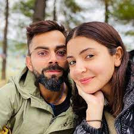

Virat Kohli (Hindi pronunciation: [ʋɪrat kohli] (listen); born 5 November 1988) is an Indian international cricketer and the former captain of the Indian national cricket team. Widely regarded as one of the greatest batsmen in the history of the sport,[4] he plays for Royal Challengers Bangalore in the IPL and Delhi in domestic cricket. Kohli holds numerous records in his career which includes scoring most runs in T20 internationals and IPL, fastest to reach 10,000 ODI runs. In 2020, the International Cricket Council named him the male cricketer of the decade. Kohli has also contributed to India's successes, including winning the 2011 World Cup and the 2013 Champions trophy. He is among the only four Indian cricketers who has played 500 matches for India.[5]
In 1998, the West Delhi Cricket Academy (WCDA) was created and on 30 May of that year, Prem Kohli, espoused his younger son's fervour for cricket, assisted nine-year-old Kohli's aspirations and arranged for him to meet Rajkumar Sharma, who initially perceived him to be just another enthusiastic and determined young boy. However, two weeks later, Sharma was impressed by Kohli's accuracy and power in throwing.[9] Upon the suggestion of their neighbours, Kohli's father considered enrolling his son in a professional cricket academy, as they believed that his cricketing abilities merited more than just playing in the gully cricket.[10] Despite his abilities, he faced the setback of being unable to secure a place in the under-14 Delhi team, not due to a lack of merit but due to extraneous factors. Prem Kohli received offers to relocate his son to influential clubs, which would have ensured his selection, but he declined the proposals, as he was determined that Kohli should earn his recognition based on his own merit and overcome the system of nepotism and deceit prevalent in the Delhi and District Cricket Association (DDCA). Kohli persisted and eventually found his way into the under-15 Delhi team.[11] He received training at the academy while simultaneously participating in matches at the Sumeet Dogra Academy located at Vasundhara Enclave.[12] As per Sharma's recollection of Kohli's initial days at his academy, he exuded remarkable talent, making it arduous for the coach to curb his enthusiasm. Kohli remained prepared to bat at any position, and often, Sharma had to physically coerce him to leave the training sessions, as he was reluctant to depart.[13] In pursuit of furthering his cricketing career, he transitioned to Saviour Convent School during his ninth-grade education.[10] Kohli's ardent passion for cricket compelled him to travel long distances with his father to ensure that he never missed a match. With time, he diligently honed his skills and diversified his range of shots, commanding respect from the local bowlers.[14]
 king| NAME | AGE | PHONE |
|---|---|---|
| Rohan | 21 | 9946413744 |